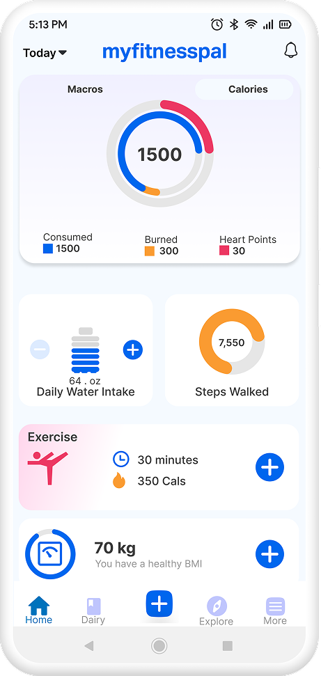
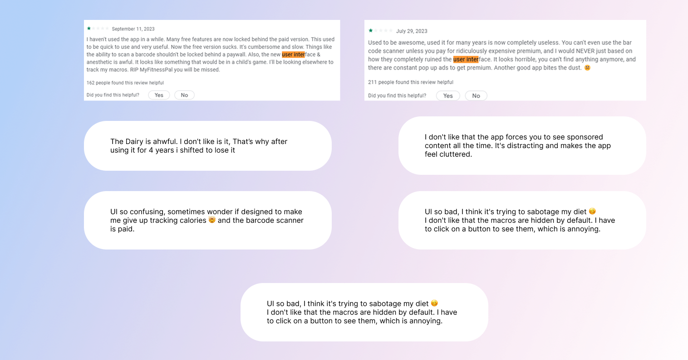
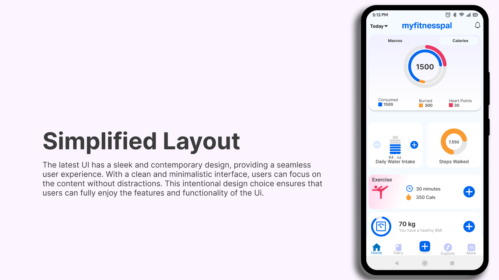
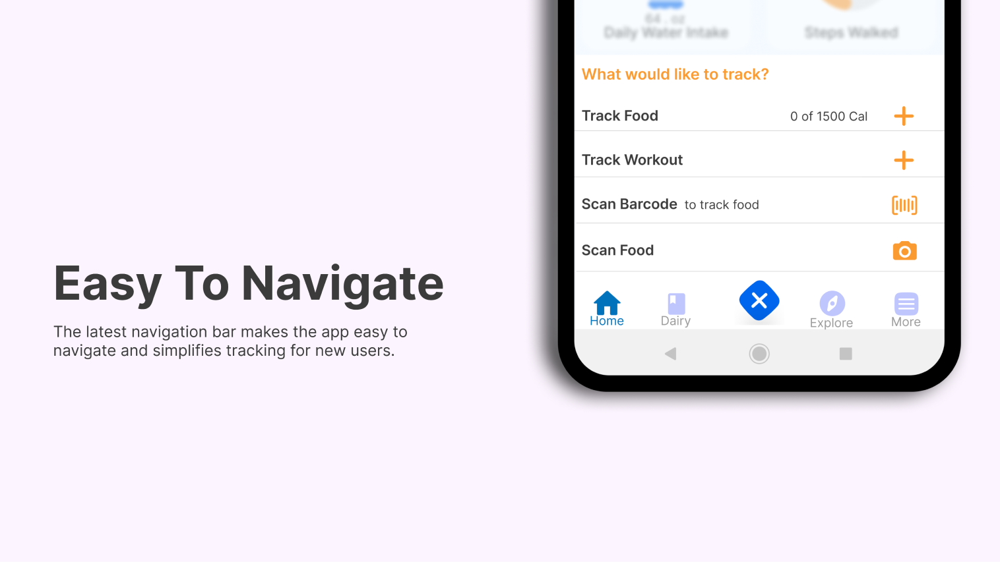
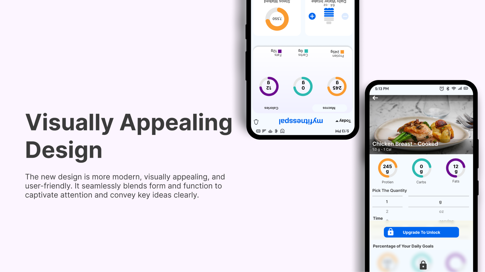
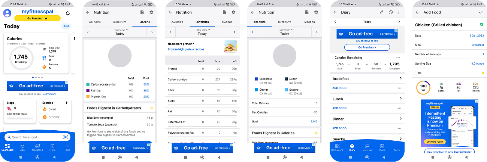
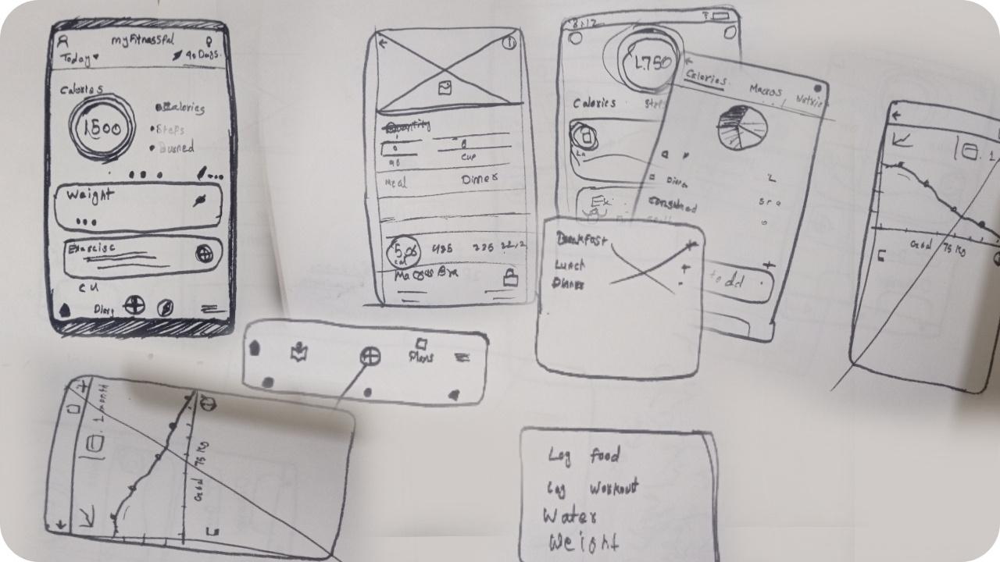
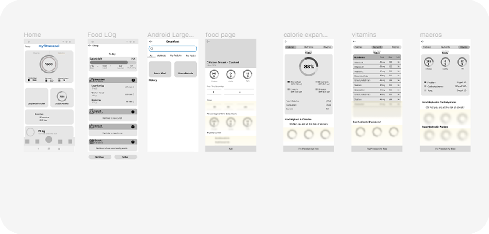
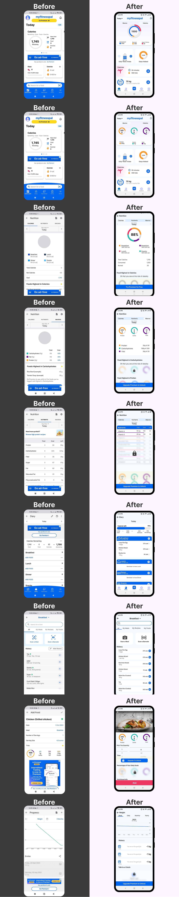

MyFitnessPal is a leading calorie tracking app that helps users achieve their fitness goals. The app offers a comprehensive database of foods and drinks, as well as a variety of features to help users stay motivated and on track.
Due to the short timeframe of the project, I was unable to conduct user interviews in person. Instead, I gathered feedback from MyFitnessPal users in two ways.
I analyzed the user feedback section of the MyFitnessPal app and noted the negative feedbacks related to UI with the highest number of reacts.
I also joined several MyFitnessPal Facebook groups and asked users to share their feedback on the app's UI. This gave me a more in-depth understanding of users' specific concerns and suggestions.

After carefully reviewing user feedback and observing app layout. I have identified several key insights. Mentioned in the list below.
MyFitnessPal's current user interface (UI) is difficult to navigate, has too many ads, feels outdated, and users dislike the paid barcode feature. These factors are frustrating users and impacting their ability to achieve their fitness goals.
To redesign the MyFitnessPal UI to be more intuitive, streamlined, and modern. This would be achieved by:




Before diving into the actual design process, I created some rough sketches. These sketches were essential for exploring different ideas and quickly refining my designs.

After creating some rough sketches, I created low-fidelity wireframes to get a sense of how the design would look and feel.
Wireframes were essential for testing different layout and navigation options, identifying potential usability problems, and communicating my ideas to others.

After completing the design and prototype, I returned to the Facebook groups to ask users for their feedback. I shared my prototype with them and conducted usability testing with five users to evaluate the usability of the new design.
I asked each user to review and experience the new design prototype. While they were unable to use the app in the same way as the original, they were able to get a sense of the user experience.
One of the key findings from my usability testing was that users found the food logging feature to be much easier to use than the previous design. They appreciated being able to see the picture of foods while logging, and the bottom navigation bar was a particularly popular feature.
Another key finding was that users can now use the barcode scanner to add food for free by watching an ad. This makes the premium feature more accessible to users, which could lead to increased adoption and engagement.

This concept redesign improves the daily tracking experience by clarifying hierarchy on the Home screen, reducing visual noise, and making logging the most obvious next action. The expected outcome is faster logging and easier scanning of key metrics like calories/macros.